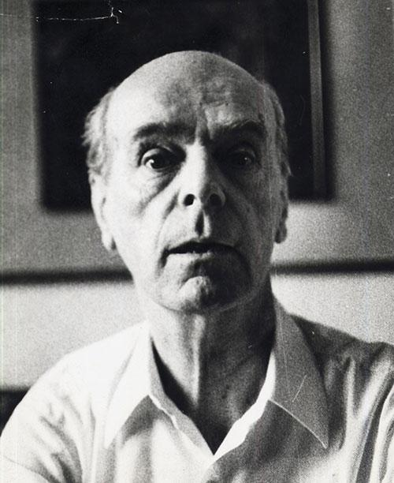
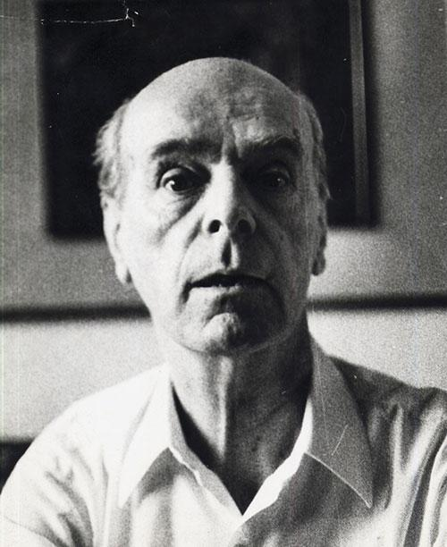

Рађамо се, живимо и умиремо. Након смрти, памти нас још по која генерација, сви ми одемо у заборав, али шта се дешава са људима који никада не буду заборављени, са људима који свој живот оставе међу корицама књига,
са људима чији смисао реченица сазрева са годинама?
Шта се догоди са људима који од свог животног искуства створе уметност коју негује мноштво наследника и у њима траже надахнућа?
Одувек сам сматрала да је незахвално започети разговор и расправу о животу и делу неког уметника. Ми смо сви недостојни да подвлачимо паралеле између реалности и маште, недостојни смо психолошког испитивања стања великих и значајних људи. У једном разговору, Мешин унук је открио да је два пута читао Дервиша, једном на крају основне школе, једном у неким зрелијим годинама. Рекао је да Селимовићева дела могу да се схвате само уколико пролазимо или смо прошли кроз неки тежак и тмуран период.Свака особа се лако може идентификовати са Дервишем, преиспитивања и унутрашњи сукоби свих нас су исти као и код овог главног лика. Навела бих и главног лика романа „Тврђава“ који вечито трага за неком врстом истине, филозофски настројеном особом која може исто као и Нурудин да се поистовети са сваким човеком. Дело сагледавамо на различите начине. Tо да ли ћемо на ове романе и целокупно Селимовићево стваралаштво доживети као филозофска, психолошка, егзистенцијална, трагична или пак љубавна дела, зависи само од нас и нашег душевног стања.
Меша је нама поклонио уметност, ми ћемо њему доживотну наклоност.
.jpg)
.jpg)
.jpg)
.jpg)
.jpg) 
